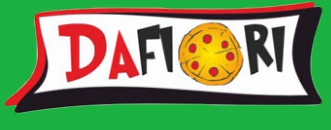
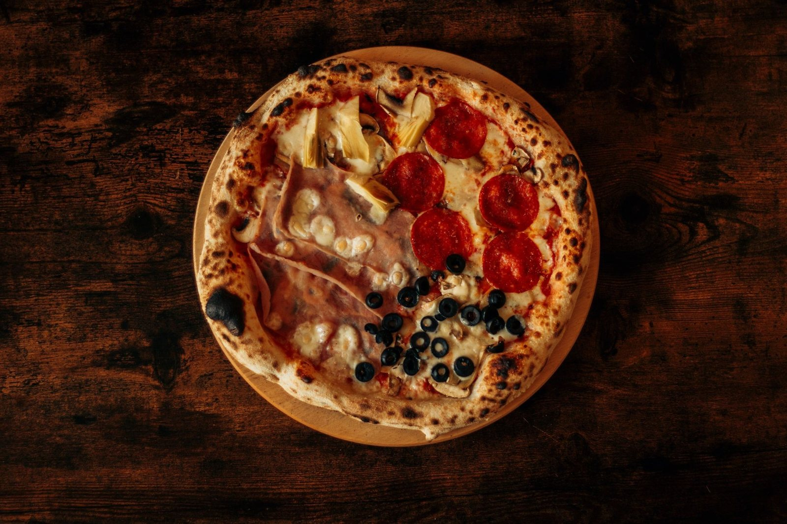

Pizza z pieca i obiady domowe - u nas, na wynos albo z dowozem po Ełku.
Karta jest krótka, bo wolimy zrobić mniej dań, ale porządnie. Latem i zimą trochę się zmienia.
Wypiekana u nas na miejscu, na cienkim cieście z chrupiącym brzegiem - klasyki i nasze autorskie kompozycje.
Kotlet, pierogi, rosół - dania, jakie pamiętamy z domu. Codziennie coś innego.
Zamów i odbierz na miejscu albo z dowozem na terenie Ełku i okolic - bez wychodzenia z domu.
Pierogi, kotlet z ziemniakami, rosół - domowa kuchnia w wersji, którą wszyscy znają.
Zupa i drugie danie w jednej cenie - szybki obiad w tygodniu, zmienia się codziennie.
Urodziny, spotkanie czy większa grupa - zadzwoń, ustalimy szczegóły.
Zadzwoń, by zapytać o dania dnia - pełną kartę zobaczysz na miejscu.
Wpadnij i spróbuj naszej kuchni - albo zamów na wynos czy z dowozem.